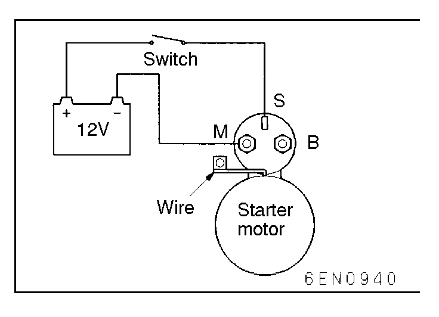
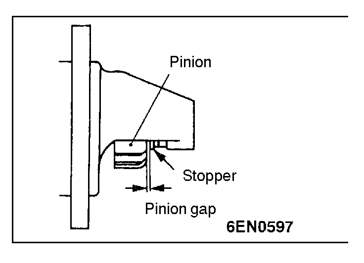
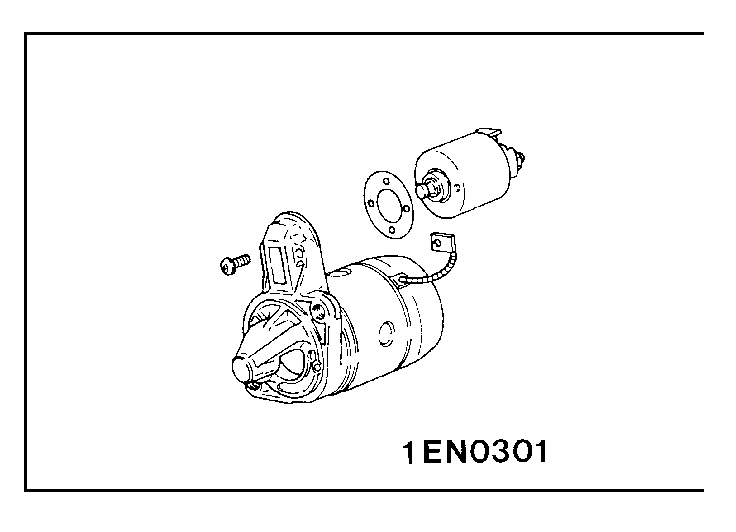
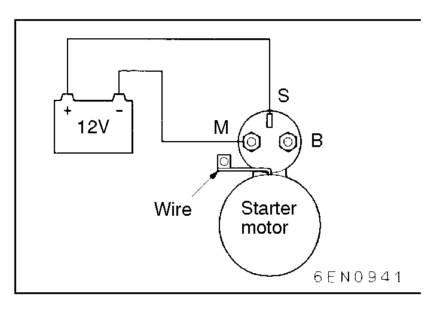
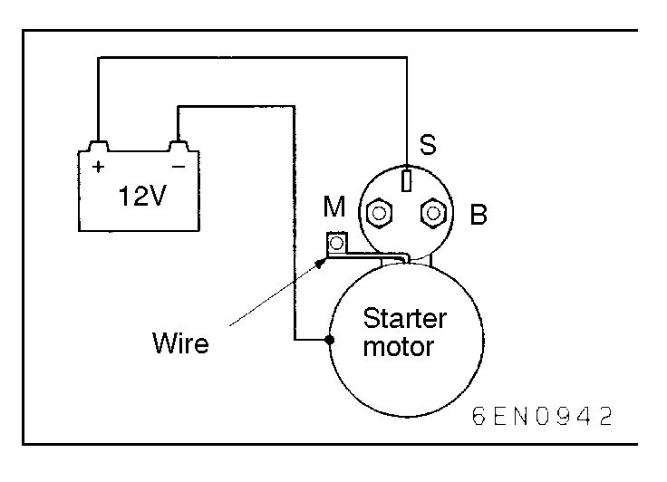
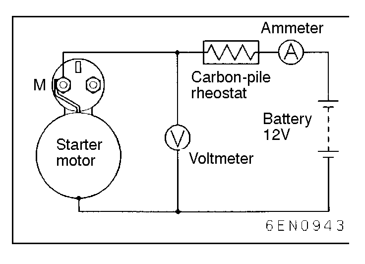
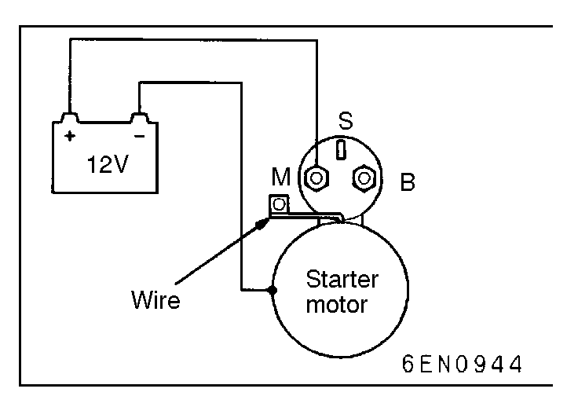

![[Previous]](https://mitsubishitechinfo.com/data/F24S/BUTTONS/fprevg.png)
![[Next]](https://mitsubishitechinfo.com/data/F24S/BUTTONS/fnextg.png)
      
INSPECTION
PINION GAP ADJUSTMENT
(1)Disconnect wire from M-terminal of magnetic switch.
(2)Connect a 12V battery between S-terminal and M-terminal.
(3)Set the switch to "ON", and pinion will move out.
Caution
This test must be performed quickly (in less than 10 seconds) to prevent coil from burning.
(4)Check pinion to stopper clearance (pinion gap) with a feeler gauge.
Standard value: 0.5 - 2.0 mm (.020 - .079 in.)
(5)If pinion gap is out of specification, adjust by adding or removing gaskets between magnetic switch and front bracket.
MAGNETIC SWITCH PULL-IN TEST
(1)Disconnect wire from M-terminal of magnetic switch.
(2)Connect a 12V battery between S-terminal and M-terminal.
Caution
This test must be performed quickly (in less than 10 seconds) to prevent coil from burning.
(3)If pinion moves out, then pull-in coil is good. If it doesn't, replace magnetic switch.
MAGNETIC SWITCH HOLD-IN TEST
(1)Disconnect wire from M-terminal of magnetic switch.
(2)Connect a 12V battery between S-terminal and body.
Caution
This test must be performed quickly (in less than 10 seconds) to prevent coil from burning.
(3)Draw out the pinion to the pinion stopper by hand.
(4)If pinion remains out, everything is operating properly. If pinion moves in, hold-in circuit is open. Replace the magnetic switch.
FREE RUNNING TEST
(1)Place the starter motor in a vise equipped with soft jaws and connect a fully-charged 12-volt battery to starter motor as follows:
(2)Connect a test ammeter (100-ampere scale) and carbon pile rheostat in series between the battery positive post and starter motor terminal.
(3)Connect a voltmeter (15-volt scale) across the starter motor.
(4)Rotate carbon pile to full-resistance position.
(5)Connect battery cable from battery negative post to starter motor body.
(6)Adjust the rheostat until the battery voltage shown by the voltmeter is 11V.
(7)Confirm that the maximum amperage is within the specifications and that the starter motor turns smoothly and freely.
Standard value: 90 A or less
MAGNETIC SWITCH RETURN TEST
(1)Disconnect wire from M-terminal of magnetic switch.
(2)Connect a 12V battery between M-terminal and body.
Caution
This test must be performed quickly (in less than 10 seconds) to prevent coil from burning.
(3)Pull pinion out and release. If pinion quickly returns to its original position, everything is operating properly. If it doesn't, replace magnetic switch.
Caution
Be careful not to pinch your finger when drawing out the pinion.

STARTER RELAY CONTINUITY CHECK
Refer to .
THEFT-ALARM STARTER RELAY CONTINUITY CHECK
Refer to .